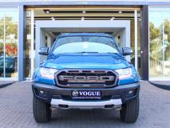
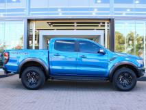

Ford Ranger
 
Ford Ranger 2.0Bi-Turbo Double Cab 4x4. Full service history with books and spare key, Just been serviced. Warranty till 120 000KM or 14 July 2021, Service plan 100 000KM or 14 July 2023. Immaculate condition 4x4 Wildtrak ready to take you on adventures. Full house features include: Bluetooth, Touch screen radio, Wildtrak seats, Cruise Control, Rubberized, Radio and electric windows, Climate Control, Tow bar, Roll Bar, Armadillo sliding cover, Navigation, Nudge bar, Side steps, Alloy Rims, tyres still very new, Reverse cam.
Vehicle Details:
- Last Updated: 08 September 2021
- Previous Owners: 1
- Service History: Full Franchise Service History
- Body Type: Double cab
- Airbag quantity: 7
- ISOFIX child seat mountings: outer rear
- Anti-lock braking system (ABS): Standard
- Cruise control:Standard
- Remote central locking: Standard
- Tyre pressure sensor/monitor / deflation detection system: Standard
- Lane departure warning: Standard
- Xenon headlights: Standard
- Engine position: Front
- Engine detail: 2.0 turbo diesel
- Engine capacity (litre): 2L
- Cylinder layout and quantity: i4
- Fuel type: Diesel
- Fuel capacity: 80
- Fuel consumption (average): 8,3 /100km
- Fuel range (average): 964 km
- Power maximum (detail): 157 kW
- Torque maximum: 500 Nm
- CO2 emissions (average): 220 g/km
SAFETY
ENGINE
Follow us
Connect with us to stay informed...
© All Rights Reserved | Designed by Joseph